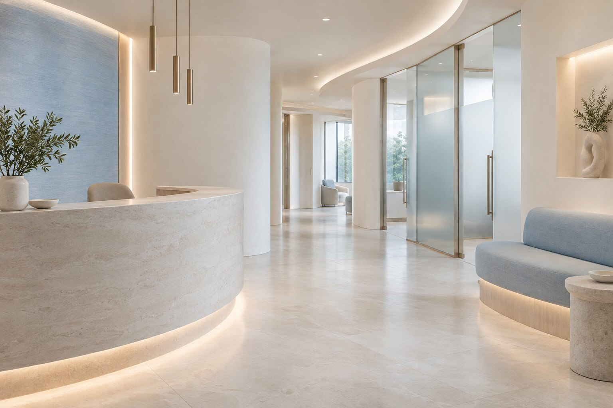
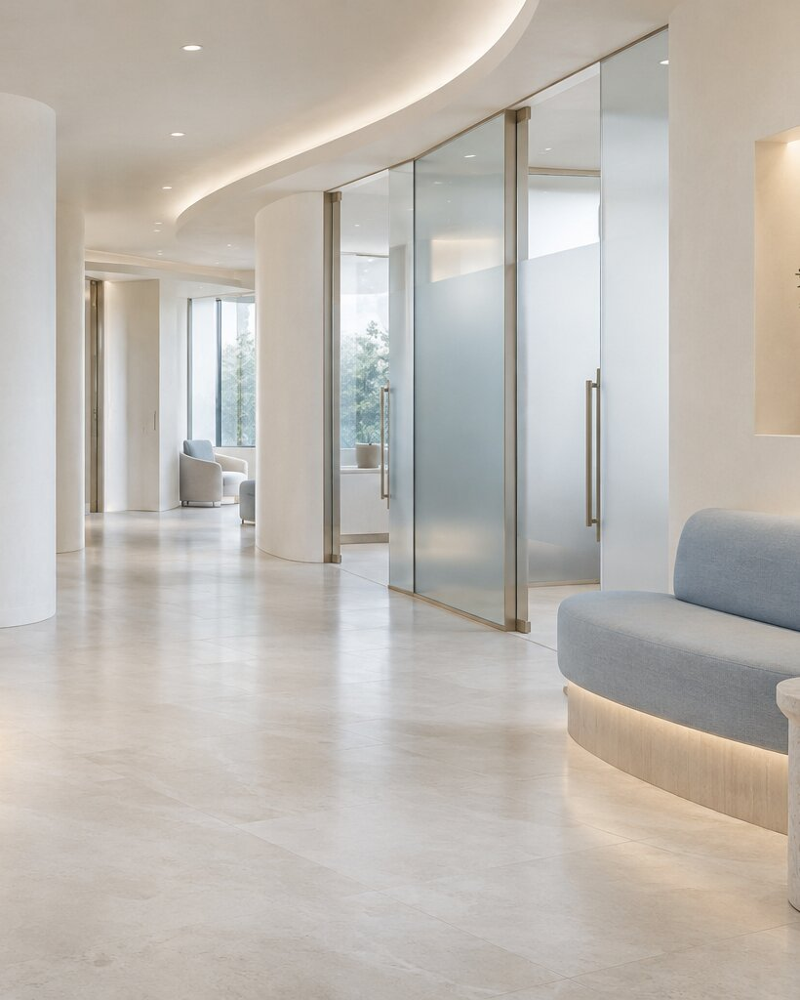
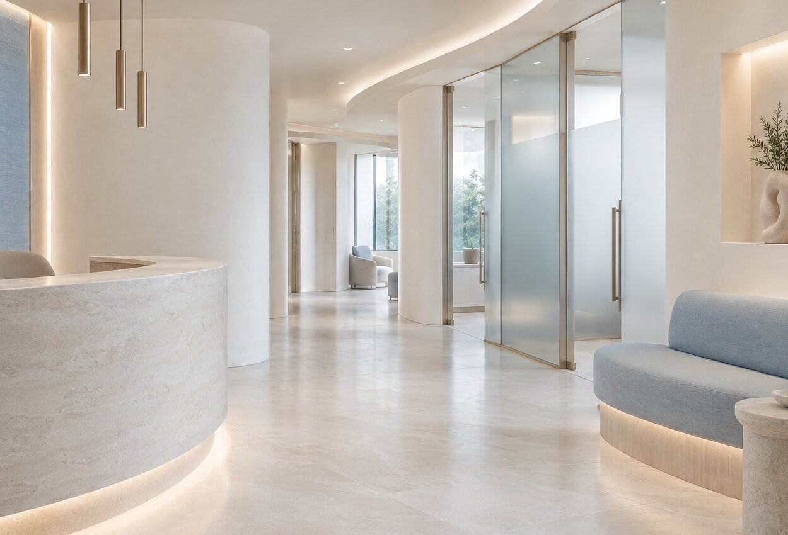
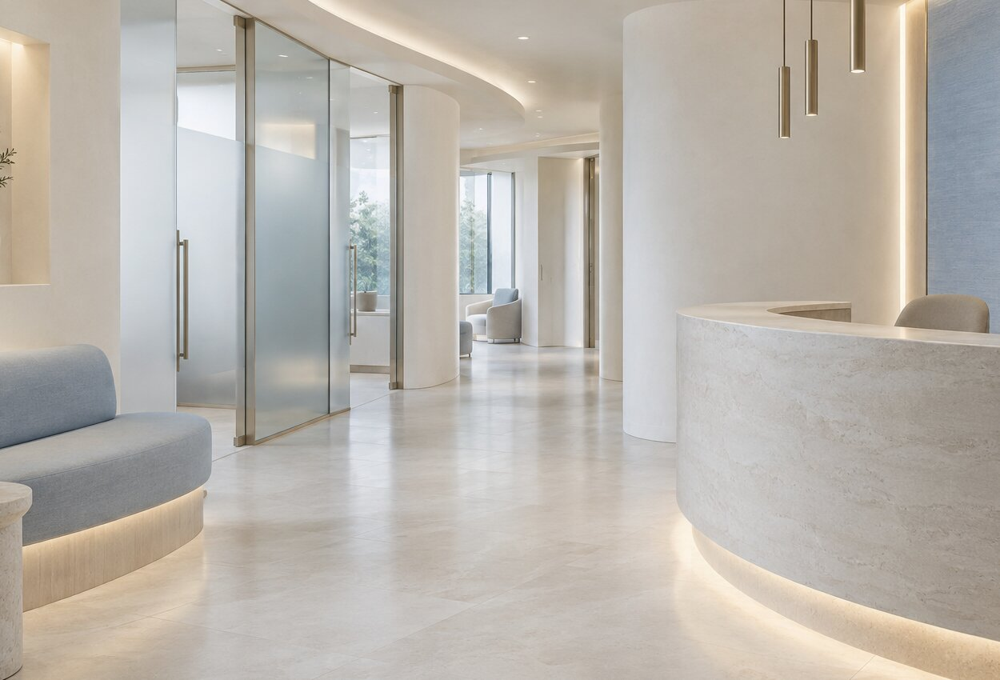

0+
함께하는 의료진PREMIUM INTEGRATED CARE
당신의 건강한 오늘을 더 깊이 바라봅니다
정확한 진단과 섬세한 돌봄을 하나의 흐름으로.
세온은 진료의 순간부터 일상으로 돌아간 이후까지 함께합니다.
NOW OPEN오늘도 정상 진료합니다
01PERSONALIZED
MEDICAL CARE
SEON · MEDICAL CENTER · SEOUL
VELTOWEB PORTFOLIO · SAMPLE PROJECT
PRECISE CARE✦따뜻한 진료✦PREMIUM EXPERIENCE✦맞춤형 케어✦
PRECISE CARE✦따뜻한 진료✦PREMIUM EXPERIENCE✦맞춤형 케어✦
01 ABOUT SEON
환자의 진료를 넘어,
하루까지 생각하는 의료

몸이 보내는 작은 신호를 놓치지 않는 것.
세온의 진료는 충분히 듣는 일에서 시작합니다.
각 분야 의료진이 함께 살피는 통합 협진과 개인의 생활 리듬을 고려한 맞춤 진료로, 필요한 치료를 정확한 순간에 제안합니다. 불필요한 과정보다 꼭 필요한 설명과 돌봄에 집중합니다.
세온의 진료 철학 ↗0+
누적 진료 사례 · SAMPLE0%
환자 만족도 · SAMPLE0yr
축적된 의료 경험02 MEDICAL SERVICES
나에게 필요한 진료를
한곳에서 만나다
정확한 검사부터 회복과 관리까지,
분절되지 않는 진료 경험을 설계합니다.
DERMATOLOGY
피부 클리닉
피부 본연의 건강을 위한 정밀 진단과 맞춤 솔루션
↗
02ANTI-AGING
안티에이징
시간의 흐름을 섬세하게 고려한 자연스러운 케어
↗LASER CARE
레이저 클리닉
피부 타입에 맞춘 정교하고 안전한 레이저 프로그램
↗BEAUTY CARE
쁘띠 시술
과하지 않게, 얼굴의 균형을 살리는 섬세한 디자인
↗CHECK-UP
프리미엄 건강검진
생활 패턴과 위험 요인을 함께 분석하는 깊이 있는 검진
↗PERSONAL CARE
1:1 맞춤 진료
검사 결과와 일상을 함께 보는 개인별 건강 로드맵
↗SEON MEDICAL CENTER
MEDICAL DIRECTOR
03 MEDICAL TEAM
“환자 한 분 한 분에게
지금 정말 필요한 진료가
무엇인지 먼저 고민합니다.”
김도윤 대표원장
피부과 · 안티에이징 · 맞춤형 통합 케어
- 01세온 메디컬센터 대표원장 가상 경력
- 02대한피부과학회 정회원 SAMPLE
- 03프리미엄 안티에이징 프로그램 디렉터 SAMPLE
※ 본 의료진과 경력은 포트폴리오를 위해 만든 가상의 정보입니다.
04 WHY SEON
우리 병원이
특별한 이유
작은 차이가 진료의 경험을 바꿉니다.
세온이 끝까지 지키는 네 가지 기준입니다.
PERSONALIZED
↗1:1 맞춤 진료
검사 수치만이 아니라 생활 습관과 고민까지 충분히 듣고 개인별 진료 방향을 설계합니다.
EXPERIENCE
↗풍부한 의료 경험
각 분야 의료진의 축적된 경험과 협진을 바탕으로 더 정확하고 균형 잡힌 판단을 내립니다.
TECHNOLOGY
↗정밀 의료 시스템
신뢰할 수 있는 검사 장비와 체계적인 프로세스로 진단부터 치료까지 빈틈없이 연결합니다.
AFTER CARE
↗체계적인 사후관리
진료실을 나선 이후에도 회복 과정과 변화를 세심하게 확인하며 건강한 일상을 돕습니다.
BEYOND HEALTH · BETTER LIFE
건강을 넘어,
삶의 변화를
생각합니다.
오늘의 치료가 내일의 더 좋은 일상으로 이어지도록
05 OUR SPACE
머무는 순간까지
편안한 공간
웰컴 라운지
WELCOME LOUNGE
프라이빗 상담실
PRIVATE CONSULTATION

정밀 진료실
MEDICAL ROOM

회복 라운지
RECOVERY LOUNGE
DRAG 옆으로 밀어 공간을 살펴보세요
06 PATIENT VOICE
마음을 먼저 살핀 진료의 기록
아래 후기는 디자인 확인을 위한 포트폴리오용 SAMPLE 문구입니다.
★★★★★
“설명을 서두르지 않고 제 생활 습관까지 세심하게 물어봐 주셔서 진료 방향을 이해하기 쉬웠어요.”
★★★★★
“병원 특유의 긴장감이 거의 느껴지지 않는 공간이었고, 예약부터 안내까지 무척 차분했습니다.”
★★★★★
“필요한 검사와 그렇지 않은 검사를 분명히 알려줘서 신뢰가 갔고 사후 안내도 꼼꼼했어요.”
★★★★★
“결과만 이야기하는 대신 앞으로 어떻게 관리하면 좋을지 현실적으로 알려주셔서 도움이 됐습니다.”
07 INFORMATION
진료 안내
- 평일
- 09:00 — 19:00
- 토요일
- 09:00 — 14:00
- 점심시간
- 13:00 — 14:00
- 일요일 · 공휴일
- 휴진
!토요일은 점심시간 없이 진료합니다.
RESERVATION & COUNSEL
당신의 건강한 내일,
02.000.0000 ↗
온라인 상담 문의→
당신의 건강한 내일,
지금 상담해 보세요.
02.000.0000 ↗
온라인 상담 문의→
※ 포트폴리오용 가상 전화번호로 실제 연결되지 않습니다.
08 LOCATION
세온으로
오시는 길
ADDRESS
서울특별시 강남구 테헤란로 000
세온 메디컬타워 3F — 7F
SUBWAY
2호선 세온역 3번 출구 도보 3분
※ 포트폴리오용 가상 주소입니다.
PARKING
건물 지하 주차장 이용 가능
진료 시 2시간 무료
SEON STATIONCITY PARKTEHERAN-RO
S
세온 메디컬센터3F — 7F
MAP PLACEHOLDER · SAMPLE LOCATION